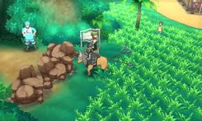
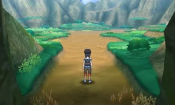
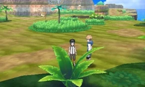
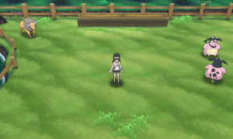

Como evoluir o Rockruff no Pokémon Sun e Moon?
Quem é Rockruff?
Rockruff é um Pokémon do tipo pedra, considerado muito bom para treinadores iniciantes devido à sua simpatia. Com o passar do tempo sua disposição vai aumentando, o tornando cada vez mais forte. Esse pokémon já está muito acostumado com seres humanos, o que faz com que ele consiga perceber as exatas emoções que o seu treinador ou qualquer outro humano possam sentir. Rockruff é o pokémon número 744 na Pokédex. Esse pokémon conta com uma evolução de três formas alcançaveis, sendo essa evolução o Lycanroc, e ele evolui para ele a partir do nível 25.

Lycanroc, como dito anteriormente, possui três formas alcançaveis, o Midday form Lycanroc, Midnight form lycanroc e Dusck form lycanroc. Todas as suas evoluções são alcançadas de maneiras diferentes. Quer aprender a evoluir seu rockruff pra alguma delas? Então continue lendo!
Onde podemos encontrá-lo?
Rockruff foi introduzido pela primeira vez nos jogos Pokémon Sun/Moon, durante a sétima geração. Mas onde podemos encontrá-lo no mapa?
Bom, antes de nos perguntarmos onde podemos encontrá-lo, temos que entender que para esse feito nós precisamos fazer alguns passos específicos. Primeiro, temos que encontrar um pokémon de montaria para nos ajudar. No jogo, temos diversos pokémons de montaria que servem de ajuda para diversas coisas, como quebrar pedras, voar pra outros lugares, nadar sobre a água e várias outras ajudas!
Para conseguirmos ter acessos a esses pokémons, temos que derrotar Hala, o primeiro Hakuna do jogo. Conseguindo o derrotar, você desbloqueia um item chamado de Ride Pager. Esse item te disponibiliza chamar qualquer pokémon de montaria na hora que você quiser. Claro, você precisa ter esse pokémon para conseguir realizar esse feito.
Agora vamos a caçada! Para que seja possível encontrar um rockruff, temos que acessar a Ten Carant Hill. Que é uma área no início do jogo, bem perto da casa do jogador, onde está inacessível devido à sua barragem de pedras.
 Obtendo um Taurus
Para que seja possível quebrar essas pedras, temos que usar o Taurus. Um pokémon de montaria que serve bastante para quebrar rochas.
Tem apenas 2 jeitos de obter um Taurus, um deles é indo noo Poni Plains, lá tem 10% de chance de aparecer um Taurus. Um outro jeito seria indo para a Paniola Ranch, lá tem apenas 5% de chance de encontrar um Taurus, mas é encontrável da mesma forma.
 Conseguindo encontrar o Taurus e tendo tudo pronto, conseguimos acessar a Ten carat hill facilmente. Vá seguindo em frente até encontrar uma área de floresta. Nessa área vá procurando seu Rockruff, lembre-se que ele tem apenas 5% de chance de aparecer, então seja paciente.
Feito Isso, você pode ir trabalhando em evolui-lo aos poucos!
Obtendo um Lycanroc
Para que possamos evoluir nosso Rockruff, temos que fazer ele chegar até o nível 24, isso porque o Rockruff evolui no nível 25, então tome cuidado na hora de ir subindo o nível do seu pokémon.
Feito isso, agora podemos evolui-lo para uma de suas três formas!
-
Lycanroc Dusk Form

Para que você evolua o seu Rockruff para o Lycanroc Dusk, você precisa chegar no nível 25 em dois possíveis horários. Sendo o primeiro deles de 5:00 AM até às 5:59AM e o outro de 17:00 PM até às 17:59 PM.
-
Lycanroc Midday Form

Para que você consiga realizar a evolução do seu Rockruff para o Lycanroc Midday, você precisará apenas evolui-lo para o nível 25 durante o dia, independente do horário.
-
Lycanroc Midnight Form

Para que você consiga evoluir o Rockruff pro Lycanroc Midnight, você precisará chegar até nível 25 durante a noite, também independente do horário.